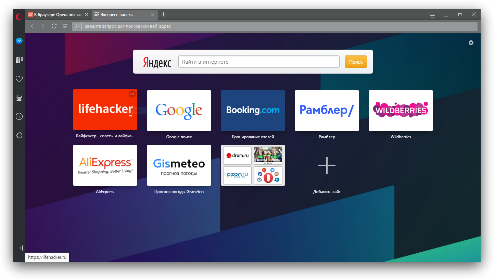

Основы создания сайтов
HTML (HyperText Markup Language) — это язык гипертекстовой разметки, основа любого веб-сайта. Он появился в 1993 году благодаря Тиму Бернерсу-Ли и с тех пор стал стандартом для создания веб-страниц. HTML не является языком программирования — это разметка, которая говорит браузеру, как отображать контент: где заголовок, где абзац, где картинка.
Современный стандарт HTML5 принес семантические теги: header, nav, main, article, footer. Вместо безликих div разработчики получили инструменты, которые несут смысловую нагрузку. Поисковики и скринридеры лучше понимают структуру сайта, что улучшает SEO и доступность для людей с ограниченными возможностями.
CSS (Cascading Style Sheets) — это язык стилей, который отвечает за внешний вид сайта. Если HTML — это скелет, то CSS — это кожа и одежда. С помощью CSS можно менять цвета, шрифты, отступы, создавать анимации и адаптировать сайт под разные устройства. Принцип разделения кода гласит: содержимое должно быть отделено от оформления.
Flexbox и Grid — современные технологии CSS для расположения элементов. Flexbox работает в одном направлении (строка или колонка) и идеален для меню и шапок. Grid создает двумерные сетки и подходит для галерей и сложных макетов. Вместе они заменили устаревшую табличную верстку и float-методы.
Адаптивная верстка — это подход, при котором сайт подстраивается под размер экрана устройства. С помощью медиа-запросов @media можно менять стили для телефонов, планшетов и десктопов. Сегодня более 60% трафика идет с мобильных устройств, поэтому адаптивность стала обязательным требованием для любого сайта.
Изучение веб-разработки открывает двери в мир цифрового творчества. От простого HTML до сложных фреймворков — путь разработчика увлекателен и бесконечен.
